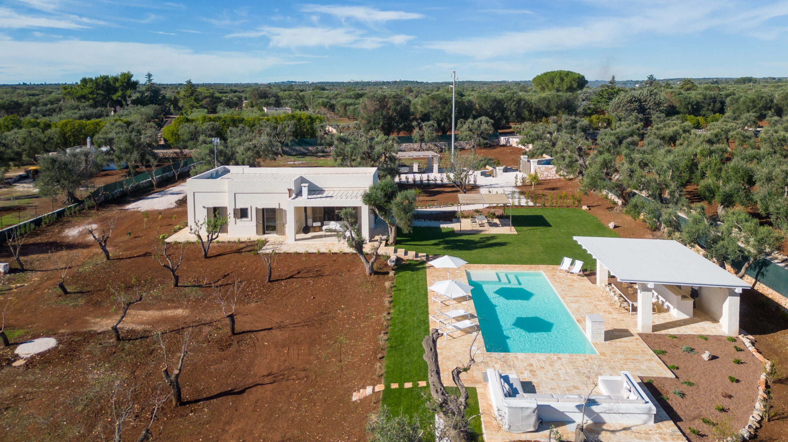

€1.200.000
Ostuni (Contrada Boccadoro) · Puglia · Italy
Single-level Itria Valley villa between Ostuni and Ceglie that mixes a magnificent exposed-stone star vault and thick whitewashed walls with a built 12×5 salt pool and outdoor kitchen among centuries-old olives — design-forward old-meets-new at the €1.2M cap.
Opened 14 Sep 2026 on Apulia Houses; For Sale €1.200.000 (inclusive of cap); ~120 m² / 3 bed / 3 bath / land 6,300 m²; habitable now. Distinct from board ostuni-os551 (OS551ZA €545k).
Open listing